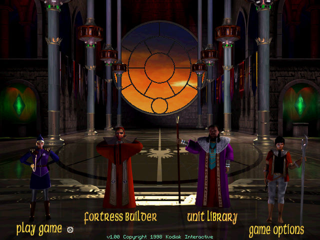
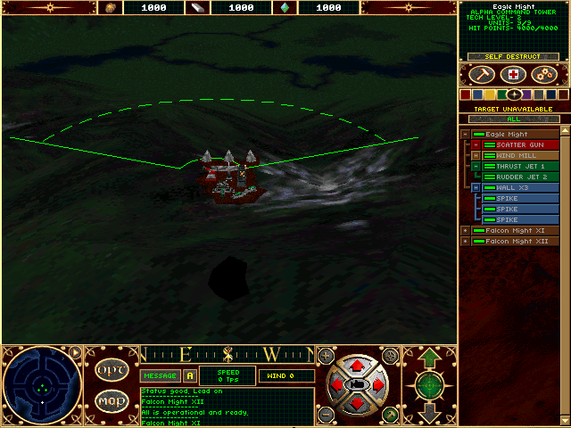

名稱：層疊空域：制空權／平流層：征服天空 (Stratosphere: Conquest of the Skies，英文版) 簡介：Kodiak 1998年出品的載具戰鬥即時戰略遊戲，由Ripcord代理發行 [待補]。   保護：光碟 備註：遊戲執行完，會導致滑鼠游標消失，必須自行到控制台重新設定回來。 檔案：MouseFix.rar = 滑鼠游標消失修正檔（請以此程式啟動遊戲） Patch_23Rd_Mission.rar = 更新檔

